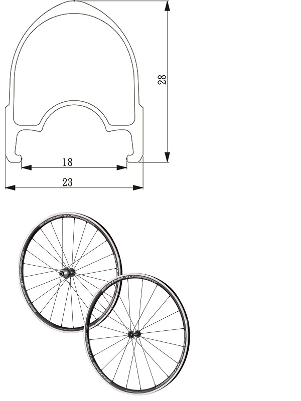

XLR-280
Specifications
| Rim Size | W:23mm; H:28mm |
|---|---|
| Model | XLR-280 |
| Rim Type | Alloy Clincher |
| E.R.D | 581 |
| Spoke | 20/24 |
| Shape | Round D.B |
| Material | Stainless |
| Nipple Material & Gauge | Alloy 14G |
| Lacing | Front: Radial Rear: Radial (non-drive side)/ Cross (drive side) |
| Hub | EDGE 288JR |
| Bearings | 2/4 sealed bearing |
| Freehub Type | Shimano/ Campy/ Sram |
| Freehub Switchable | Yes |
| Freehub Material | Alloy |
| Axle Width (O.L.D) | F: 100mm/ R: 130mm |
| Axle Material | Alloy |
| Skewer Type | QR |
| Weight (w/o skewer) | 1541g +/- 30g |